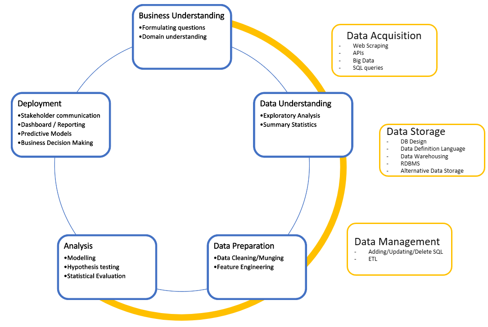

Graduate Program Analytics Foundation
The following are courses that students in the Walton College may take in the graduate programs of the Information Systems Department
|
We use the following diagram to describe the data analytics process. While we recognize that organizations will have different processes, or steps in the process, this diagram provides a common vocabulary which we use to communicate with our students across the program and helps to align course objectives. As such, we have aligned the first 4 courses that students take to one or more of the steps in the process. |

|
| Stage | ISYS 5103 Get/Prepare the Data |
ISYS 5503 Visualize Data |
ISYS 5833 Manage Data |
ISYS 5843 Mine the data |
|---|---|---|---|---|
| Business Understanding | Explored | |||
| Data Understanding | Key Emphasis | Explored | ||
| Data Preparation | Key Emphasis | Explored | Key Emphasis | |
| Analysis | Key Emphasis | Explored | ||
| Deployment | Key Emphasis | Key Emphasis | Key Emphasis | |
| Acquisition | Key Emphasis | Explored | ||
| Storage | Explored | Key Emphasis | ||
| Management | Key Emphasis |
Course Offerings
The following courses are the first in the cirriculum.
ISYS 5103 - Data Management
This course focuses how to collect data and prepare it for analysis. Key skills include Python and SQL.
ISYS 5503 - Data Analysis
This course focuses on statistical analysis and data visualization. Key skills include R and Tableau.
ISYS 5833 - Data Management
This course focuses on statistical analysis and data visualization. Key skills include R and Tableau.
ISYS 5843 - Data Mining and Business Intelligence
This course focuses on statistical analysis and data visualization. Key skills include R and Tableau.